KOBrot
The app can be installed from:
Requires Windows 10 (build 1809) or later, or Windows 11.
An interactive explorer for the Mandelbrot and Julia sets — zoom endlessly into the fractal, paint it with perceptually-uniform colour maps such as Viridis and Magma, watch the matching Julia set update live, fly around it as a 3D landscape, and save your favourite views.
Windows UWP Microsoft Store Free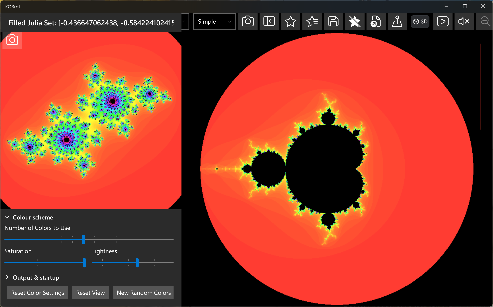
KOBrot draws the famous Mandelbrot set — the intricate fractal you get by asking, for every point on the
complex plane, whether the sequence z → z² + c stays bounded or runs off to infinity. Points
that stay bounded form the black "body" of the set; points that escape are coloured according to how quickly
they escape, which is what produces the endlessly detailed bands and filaments around the edge.
You can zoom in almost without limit, recolour the picture on the fly, and — because every point of the Mandelbrot set is itself the "seed" for a whole Julia set — explore the matching Julia set for whatever point you are hovering over. The sections below walk through the main features; most other controls explain themselves through their tooltips.
The most up to date version of this information will always be the online version.
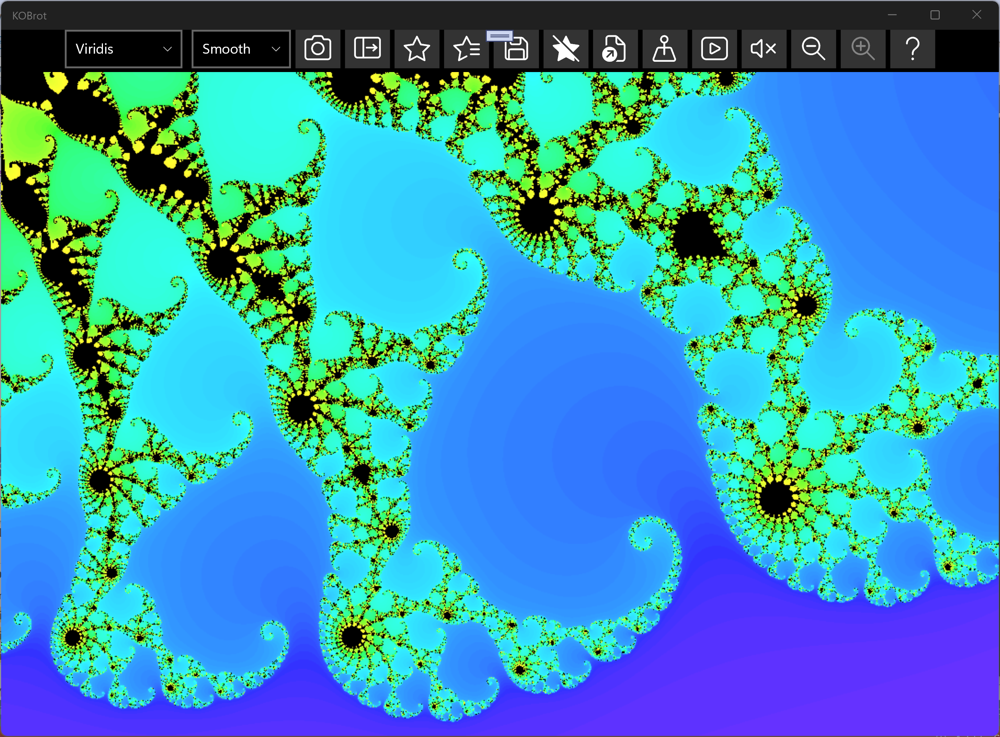
To dive into the fractal, click and drag a rectangle across the area you want to magnify. A selection box — matching the proportions of the drawing area — follows the pointer, and releasing the mouse button zooms to the selected region. Each zoom is added to a zoom history, so you can step back and forward through the places you have visited, much like the history in a web browser.
On a touchscreen you can pinch two fingers together or spread them apart to zoom out or in, centred on the midpoint between your fingers, and drag with two fingers to pan. A mouse wheel (or precision-touchpad pinch) zooms as well. As you zoom the coordinates and magnification update so you always know where you are on the complex plane. If you hold down the Ctrl key while zooming with the back/forward zoom buttons, the zoom will be centred on the current centre of the view. Holding Shift while zooming will keep the colour scheme fixed, so you can explore the structure without changing the colours.
The picture above is the classic whole-set view drawn with the Viridis colour map. Because the colouring is based on the escape count, the deeper you zoom the more the colour bands reveal the fine structure of the boundary.
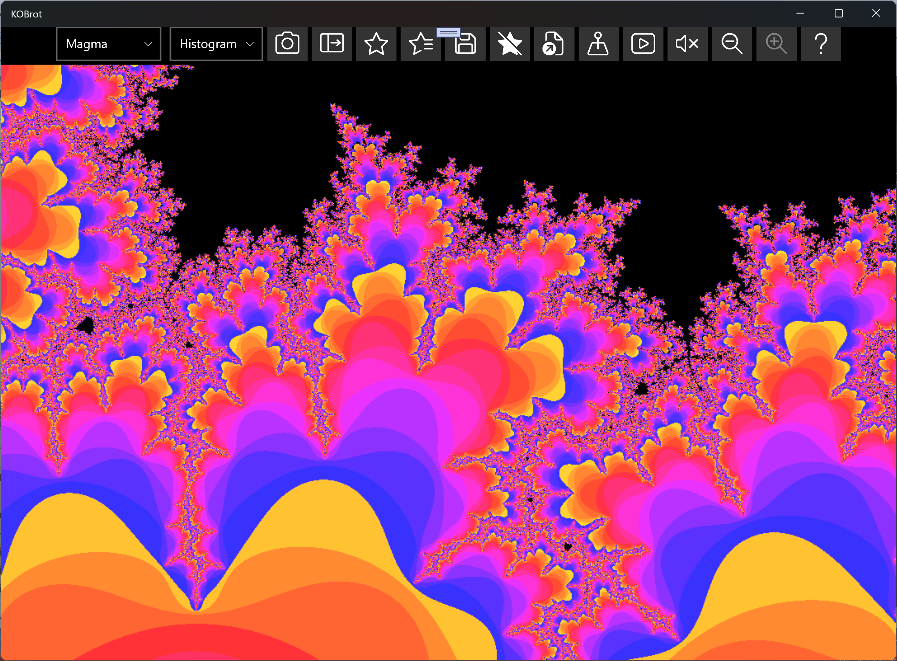
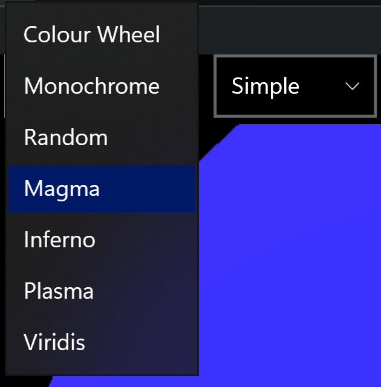
The same fractal can look completely different depending on how the escape counts are mapped to colours. KOBrot includes the well-known perceptually-uniform colour maps — such as Viridis (purple-blue through teal and green to yellow) and Magma (black through deep purple and red to pale yellow), shown here. In a perceptually-uniform map, equal steps in escape count look like equal steps in colour, so the bands read evenly to the eye and the maps stay colour-blind friendly.
Use the number-of-colours slider to set how many colour bands the escape counts are spread across: fewer bands give bold, poster-like steps, while more bands give a smooth, finely-graded blend. A hue offset control rotates the colours through the map so you can shift where each band falls without changing the map itself.
The colour maps to choose from are:
| Colour map | Look |
|---|---|
| Colour Wheel | Hue ramp, red → violet. A “rainbow” of colour. |
| Monochrome | Shades of a single colour, and grayscale images. |
| Random | A freshly generated palette per band — kaleidoscopic and unpredictable. |
| Magma | Black → deep purple → red → pale yellow. Perceptually uniform. |
| Inferno | Black → deep purple → fiery red → orange → bright yellow. Perceptually uniform; like Magma but brighter and more fiery towards the top. |
| Plasma | Dark blue-purple → magenta → orange → yellow. Perceptually uniform and colour-blind friendly. |
| Viridis | Purple-blue → teal → green → yellow. Perceptually uniform and colour-blind friendly. |
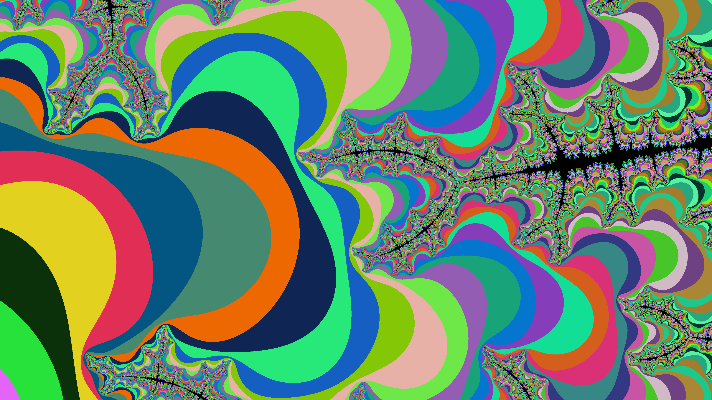
The "Colour Wheel" is the default, and typical Mandelbrot choice, but for something more playful, try the random colour map: KOBrot generates a fresh palette so each band gets an unexpected colour, giving the kaleidoscopic, stained-glass look above. It is a quick way to make the boundary structure jump out — and to stumble on a striking palette you would never have picked deliberately. Generate another whenever you want a different one.
You can also choose how the image is drawn: left-to-right fills the picture in tidy columns, while random scatters the pixels so the whole image resolves at once like an old dial-up photo coming into focus. It makes no difference to the finished picture — just to how it appears while it is being computed — and your choice is remembered for next time.
As well as which colours are used, you can choose how the escape counts are turned into those colours . This changes the character of the picture quite a lot:
| Option | What it does |
|---|---|
| Simple | Colours come straight from the raw (whole-number) escape count — the number of steps before each point runs off to infinity. Fast, and gives crisp concentric bands, since the colour jumps each time the count ticks up by one. |
| Smooth | Uses a continuous, fractional escape value instead of the whole number, so the bands blend smoothly into one another and the hard “contour” steps disappear, giving a soft, graded look. |
| Histogram | Spreads the colours according to how often each escape count actually occurs across the whole image, so every colour in the map gets used roughly equally. This keeps detail visible even where most points share similar counts — especially useful when zoomed deep in, where the escape counts bunch together. |
Simple and Smooth are the everyday choices; reach for Histogram when a view looks washed-out or dominated by one or two colours and you want to bring the structure back out.
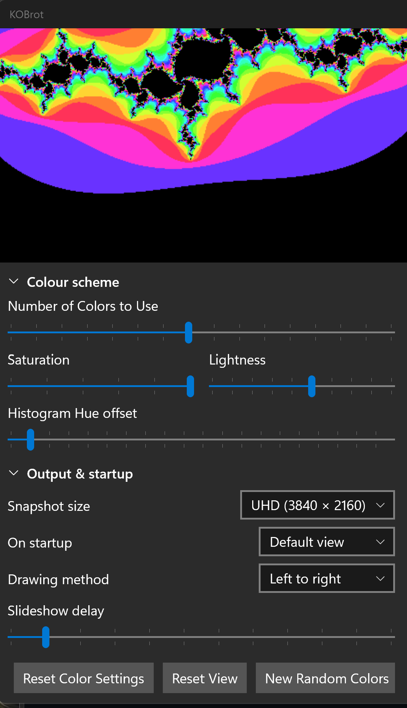
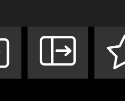
The controls in the sidebar are grouped into collapsible sections, each with a headed bar you click to fold the section away or open it out again — handy for keeping the panel tidy and leaving more room for the Julia set picture. The Colour scheme section (open by default) holds the number-of-colours, saturation and lightness sliders, along with a hue offset slider when Histogram colouring is selected and a colour picker when the Monochrome map is chosen. The Output & startup section (folded away by default) holds the snapshot size, startup behaviour and drawing method choices and the favourites slideshow delay. The picture updates live as you make changes so you can see the effect straight away.
To open the colour scheme controls or to see the Julia Set just click on the button shown above, in the top ribbon. The sidebar will slide open (the same button closes it again) and as you move the pointer around in the main Mandelbrot image to the right the Julia Set will update in real time to reflect that point. If you want to snapshot the Julia Set using the "camera buttons" you obviously don't want to change that point position else you'd change the picture. To prevent that just hold down the Shift key as you move the pointer to the snapshot button. You can release the Shift key once you are away from the Mandelbrot canvas.
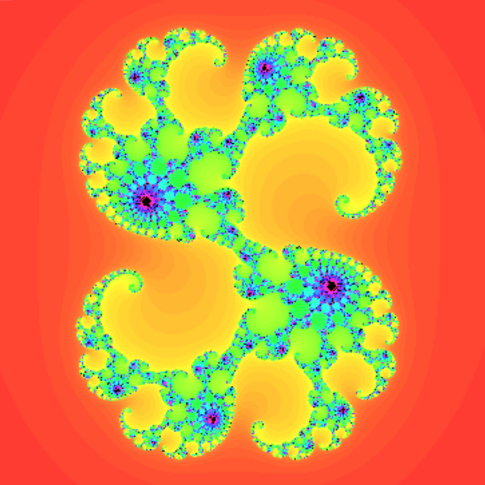
Every point c on the Mandelbrot plane defines its own Julia set — the picture you get by
fixing that c and asking which starting points stay bounded under
z → z² +
c
. Points inside the Mandelbrot set give connected, often beautifully symmetric Julia sets; points just
outside give delicate, dust-like ones.
As you move the pointer over the Mandelbrot set, KOBrot draws the matching Julia set live, so you can hunt for appealing shapes simply by gliding around the boundary. The companion view (shown on the main screenshot at the top of this page) lets you watch both at once; you can also view a chosen Julia set on its own, as above, and zoom into it just like the Mandelbrot set.
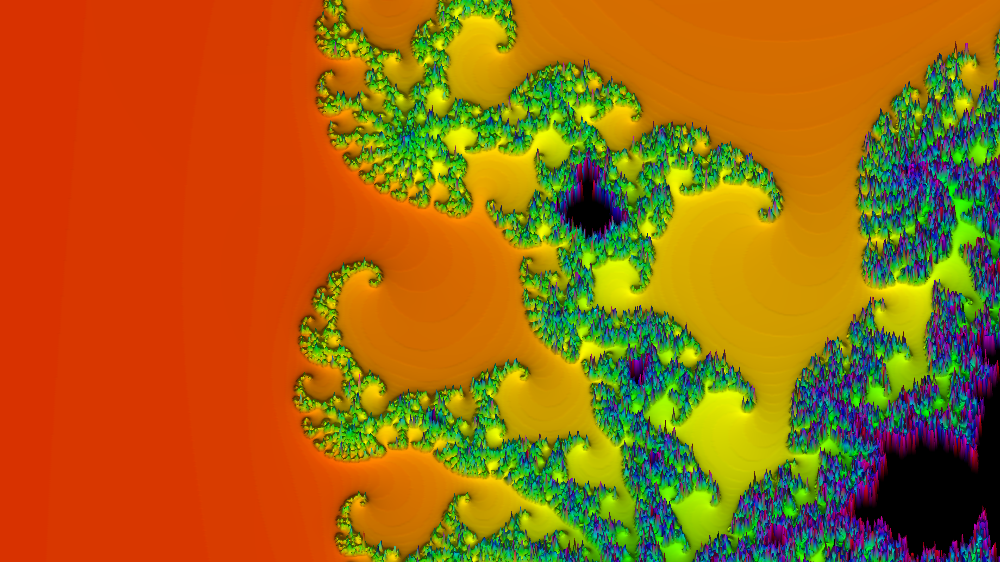
KOBrot can also draw the fractal as a three-dimensional landscape. Click the 3D button in the top ribbon and the flat picture is replaced by a relief surface in which the height of each point comes from its escape count — the coloured bands around the set become terraced hillsides climbing towards the black body of the set itself. The surface is rendered on your graphics card, so spinning and zooming it stays smooth even at high detail. The same button — whose face now reads 2D — returns you to the flat view, and everything else (zoom history, favourites, colour maps) carries on exactly where you left it.
Moving around the landscape works like this:
While the 3D view is active a small 3D relief panel floats at the right-hand edge of the picture with controls for shaping the landscape:
| Control | What it does |
|---|---|
| Mesh detail | How finely the surface is divided into grid cells. Higher values give a crisper, more detailed landscape but take a little longer to rebuild. |
| Height | The vertical exaggeration — how tall the relief rises for a given change in escape count, from a gentle ripple to dramatic peaks. |
| Plateau body | Ticked, the black in-set body sits at the top as a flat plateau with the escape bands falling away below it; unticked, it lies flat at “sea level” and the bands rise around it. |
| Smooth height | Ticked, heights use the smooth continuous escape value, so the terraced steps blend into a continuous slope; unticked, each whole escape count is its own terrace. |
| Smooth shading | Ticked, the lighting is softened so the shading flows smoothly over the surface while the geometry keeps its detail; unticked, the lighting follows every step and facet. |
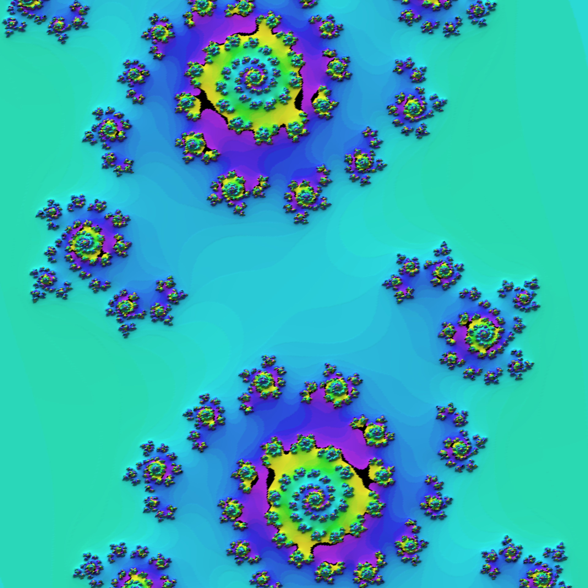
The 3D view is not just for the Mandelbrot set: when the sidebar is open, the same 3D button switches the Julia set into a relief landscape as well. The Julia landscape rotates and zooms independently of the Mandelbrot one, so you can pose each view exactly as you like. Click a point on the 3D Mandelbrot surface (or hover over the 2D one) and the Julia landscape rebuilds for the new point.
The camera buttons understand the 3D view too: while a 3D view is showing, taking a snapshot captures the landscape exactly as you have posed it — rotation, tilt, zoom, colours and all.
The 3D view needs a compatible graphics device; on the rare machine without one, KOBrot simply says so and carries on in 2D.
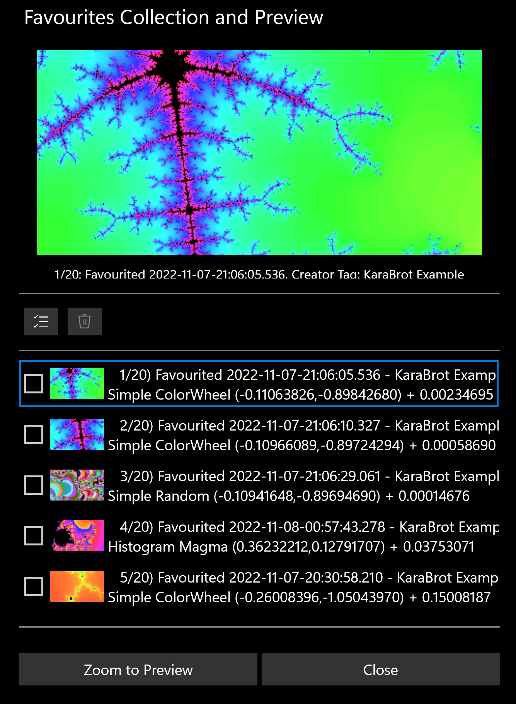
When you find a view worth keeping, save it to your favourites. Each favourite remembers the exact location, magnification, colour map and colouring settings, together with a title and a creator tag so you can tell your own discoveries apart from the samples that ship with the app. KOBrot comes with a starter collection of favourites so there is something interesting to look at the very first time you run it.
Open the favourites collection dialog to browse your saved views; double-click an entry to jump straight back to it. From here you can also manage the list — rename, remove, or step through your collection as a slideshow. Because a favourite stores the full set of parameters, re-opening one reproduces the picture exactly as you saved it.
KOBrot keeps your collection free of duplicates. If you try to add a view that is identical to one you already have — the same location, magnification, colour map and colouring — it is not added again; instead KOBrot tells you which existing favourite it matches and selects that one for you. The same check runs when you load a favourites file: any views already in your collection are skipped, and KOBrot reports how many duplicates it ignored, so merging someone else's collection with your own never leaves you with repeats.
KOBrot can start up however suits you. Choose from:
Your choice is remembered between launches.
You can save the picture you are looking at as an image. The first time it runs, KOBrot offers to create a KaraBrot Snapshots folder inside your Pictures library as a convenient place to keep them, and adds a clickable link to open that folder. Saving a snapshot captures the current fractal — colours and all — as a high-resolution image you can share or print. Both the Mandelbrot set and a Julia set can be snapshotted, each from its own camera button.
You can also choose the size of the saved image, independently of the window size:
| Snapshot size | What you get |
|---|---|
| Visible dimensions | Matches what is on screen — the same shape and proportions as the drawing area, saved at your display's full pixel resolution. |
| UHD (4K) | A fixed 3840 × 2160 image whatever the window size — ideal for high-resolution wallpaper or printing. |
| 8K | A fixed 7680 × 4320 image for maximum detail; the files are larger and take a little longer to render. |
The larger sizes are rendered fresh at their full resolution rather than scaled up from the screen, so the extra pixels show genuinely finer detail rather than just a bigger copy of what you can already see. And if the 3D relief view is active, the same camera buttons capture the 3D landscape just as you have posed it on screen.
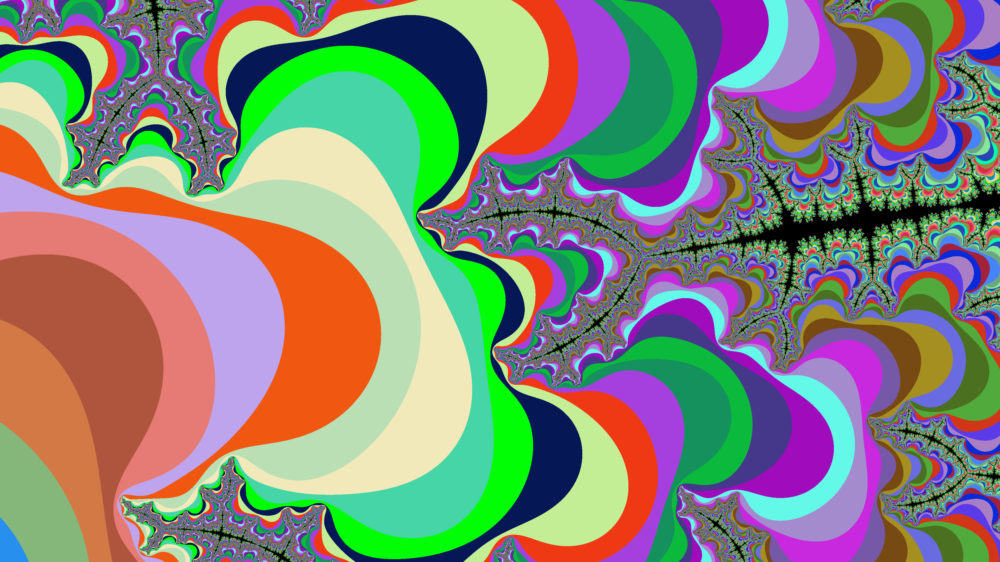
Render the Mandelbrot set at high detail and zoom almost without limit into its boundary.
See the Julia set for the point under the pointer update in real time, or view a chosen Julia set on its own.
Turn the Mandelbrot or Julia set into a GPU-rendered 3D landscape — spin, tilt and zoom it, and shape its height, detail and shading.
Generate images using the standard "Colour Wheel", colour-blind-friendly maps such as Viridis and Magma, or a fresh random palette for a kaleidoscopic, stained-glass look that makes the structure pop, amongst others.
Set the number of colour bands and rotate the hue offset, with the picture updating live as you change them.
Drag a proportional box to zoom in, and step back and forward through your zoom history like a web browser.
Pinch to zoom and drag with two fingers to pan; the mouse wheel and trackpad zoom too.
Save views — location, zoom and colours — with a title and creator tag, and reload them in one click. Duplicates are detected and skipped automatically.
Open on the default view, your last zoom, or your whole previous zoom history.
Save the current fractal as an image at screen, 4K or 8K resolution, with a dedicated Pictures subfolder offered on first run.
The app can be installed from:
Requires Windows 10 (build 1809) or later, or Windows 11.
KOBrot is free software.
← Back to KLO Software